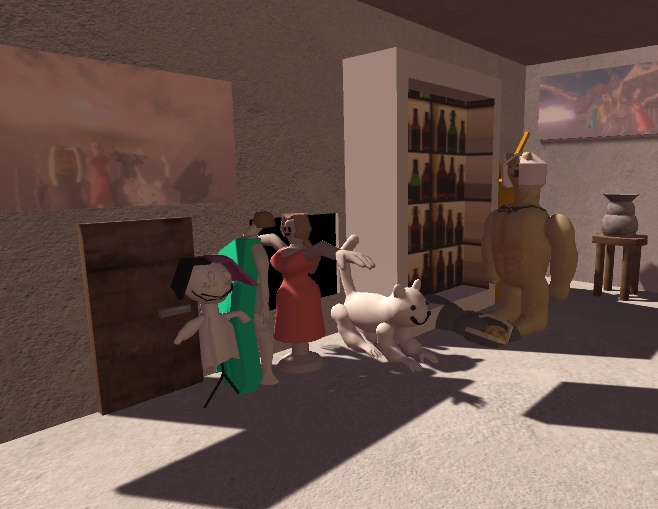
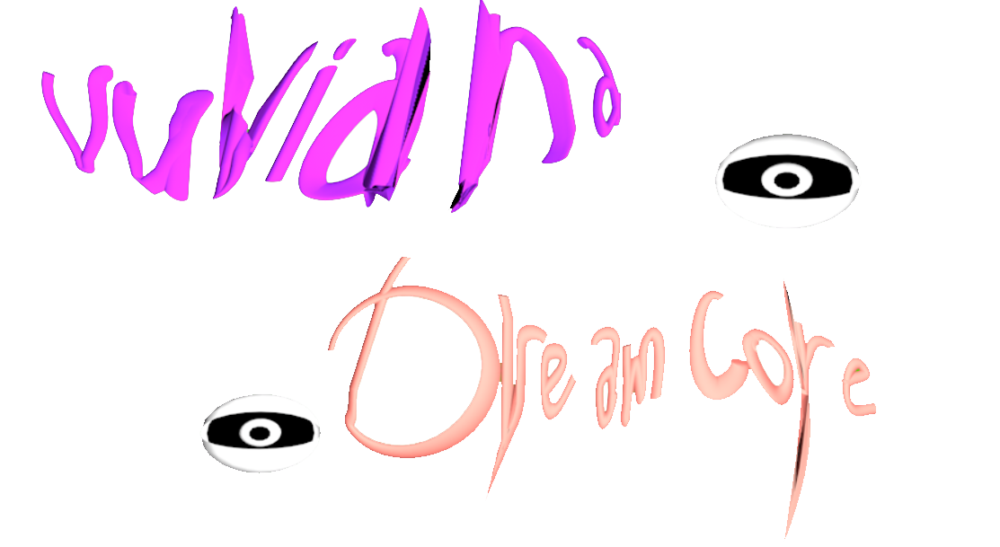

vuviana dreamcore


Информация о игре
Жанр: Экшн, платформер
Год: 2022
Разработчик: melik develop
Версия: Полная версия 1.0
Язык интерфейса: русский
Размер: 193,8 МБ
Описание
Описание игры "Vuviana Dreamcore" без магии и фантастических
возможностей:
"Vuviana Dreamcore" - это увлекательная игра, где обычные ситуации
преобразуются в увлекательные испытания. В роли Багун из альтернативной
вселенной ВЮ игроки погрузятся в мир, где даже самые обыденные моменты
становятся интересным процессом прохождения. Откройте для себя
необычных соседей, разгадайте загадки и преодолевайте препятствия,
которые превращают обычную жизнь в захватывающее приключение. "Vuviana
Dreamcore" приглашает игроков насладиться простотой и красотой
повседневности, превращая каждый шаг в уникальный опыт и возможность
увидеть мир по-новому.

Особенности игры от Мелика
Сбор предметов
Взаимодействие с объектами
Спринт
Климбинг-система
Система плаванья
Система вращения локаций